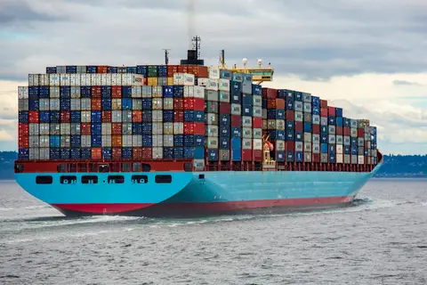

New website: three design directions
Open each option on desktop and on your phone. All are fully responsive.

Option 1Horizon
Close to your reference: a full-screen ocean hero with glass navigation, the yellow and blue logo bands, and Track & Trace right on the first screen. Classic serif headlines.
View Option 1 → Option 2
Option 2Meridian
Clean corporate layout: a split hero, a quick-tools bar for tracking, schedules and quotes, an interactive services list, a route network map, and direct team contacts.
View Option 2 → Option 3
Option 3Horizon multi-page
The Horizon look as a full website with normal navigation: a short home page with the essentials, plus separate pages for About, each service, Sailing Schedule, Tracking and Contact.
View Option 3 →